السلسلة 51
السيارة (صنف B) · 20 سؤال. كل سؤال فيه الصورة والصوت. اختار الجواب (ولا جوج إلا كانو صحاح)، ورك على «تأكيد» باش تشوف واش صبتي.
- 20سؤال
- 16باش تنجح
- 1 – 4جواب واحد ولا أكثر
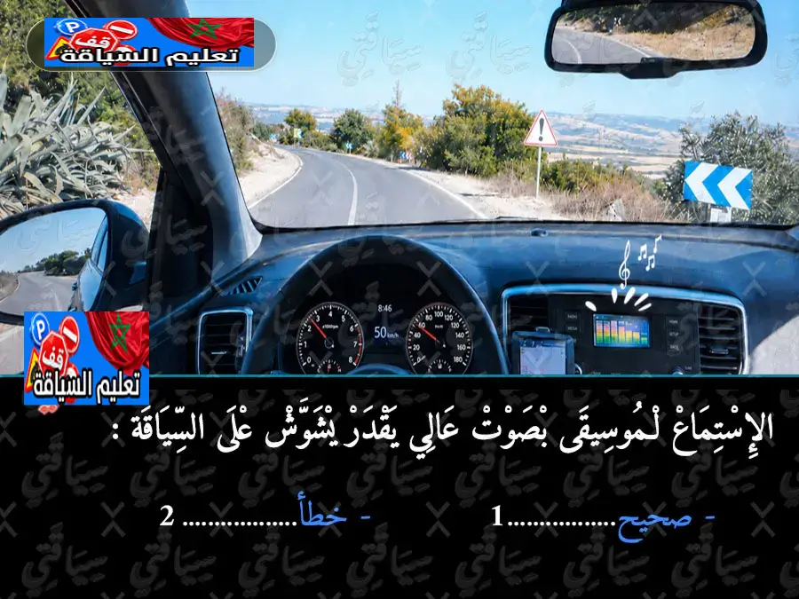
الكلافيي: 1–4 للجواب، Enter للتأكيد وللسؤال الجاي.
السلسلة 51 · النتيجة ديالك
0 / 20
السلسلة 51
السيارة (صنف B) · 20 سؤال، بالصوت، مع الجواب الصحيح والشرح.
السؤال 1
بيّن الجواب
الجواب الصحيح: 1
الاستماع للموسيقى بصوت عالي بزاف كيشوش على السياقة، حيث السائق ماكيبقاش سامع مزيان الأصوات المهمة فالطريق بحال الكلاكسون، صوت الإسعاف أو الشرطة، ولا شي تنبيه من عربة أخرى. كذلك الصوت العالي كينقص التركيز وكيخلي السائق يتفاعل ببطء إلا وقع شي خطر مفاجئ، لأن جزء من الانتباه ديالو كيولي مشدود للموسيقى ماشي للطريق. لذلك خاص الموسيقى تكون بصوت مناسب وما تأثرش على الانتباه ولا على التركيز ديالي أثناء السياقة. الجواب الصحيح هو رقم 1.
السؤال 2
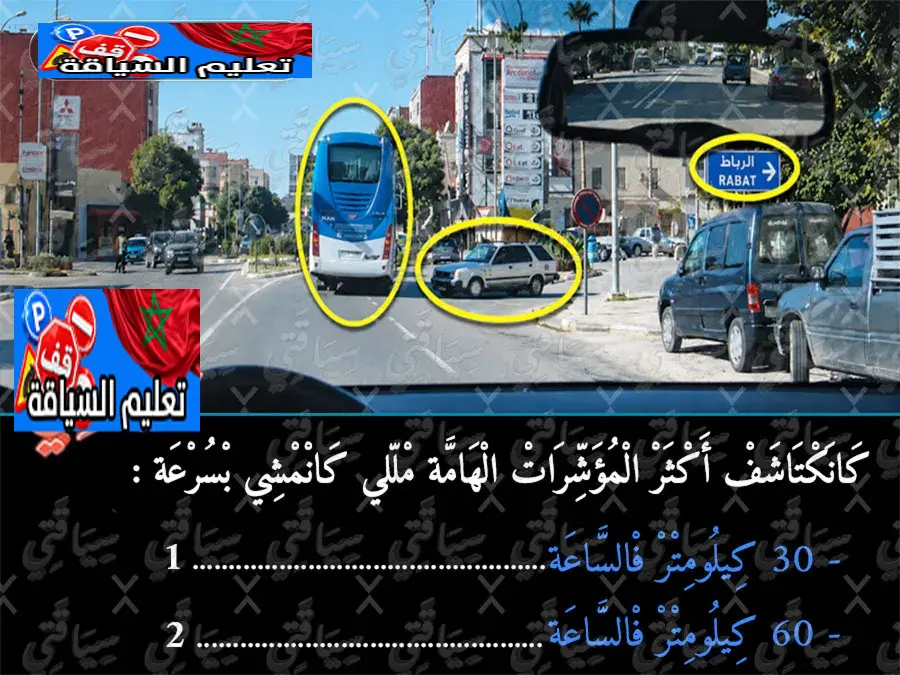
بيّن الجواب
الجواب الصحيح: 1
ملي كنمشي بسرعة قليلة بحال 30 كلم فالساعة، كيكون عندي وقت أكثر باش نراقب الطريق ونكتاشف المؤشرات المهمة اللي قدامي ومن الجوانب، بحال الحافلة اللي فالمسلك، السيارة اللي خارجة من اليمين، وعلامة الاتجاه ديال الرباط. أما ملي كنزيدو فالسرعة بحال 60 كلم فالساعة، مجال الرؤية كينقص والتركيز كيولي أكثر فالوسط ديال الطريق، وكيولي السائق يقدر ماينتبهش لبعض العلامات أو الأخطار الجانبية فالوقت المناسب. لذلك كلما كانت السرعة أقل، كنشوفو أش كاين فالطريق مزيان ونشوفو مؤشرات أكثر. الجواب الصحيح هو رقم 1: 30 كيلومتر فالساعة.
السؤال 3
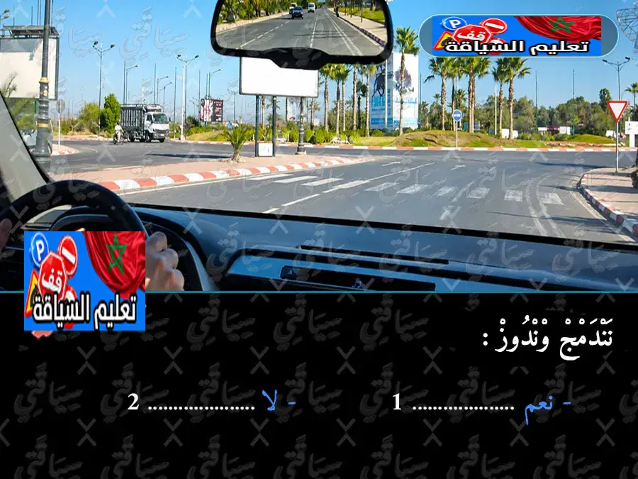
بيّن الجواب
الجواب الصحيح: 2
حنا قريبين من ملتقى طرق دوراني، والعلامة اللي على اليمين هي علامة إعطاء حق الأسبقية، يعني ماعنديش الحق ندخل مباشرة للدوران. خاصني نقص من السرعة، نراقب مزيان الجهة اليسرى، ونعطي الأسبقية للعربات اللي داخلة أصلا فملتقى الطرق الدوراني وكتجي من اليسار. إلا كان الطريق خالي نقدر نندمج وندوز، ولكن إلا كانت شي عربة جاية خاصني نوقف أو نتسناها حتى دوز عاد ندخل بأمان. إذن فهاد الحالة ماشي ندخل مباشرة، بل خاصني نعطي حق الأسبقية، والجواب الصحيح هو رقم 2.
السؤال 4
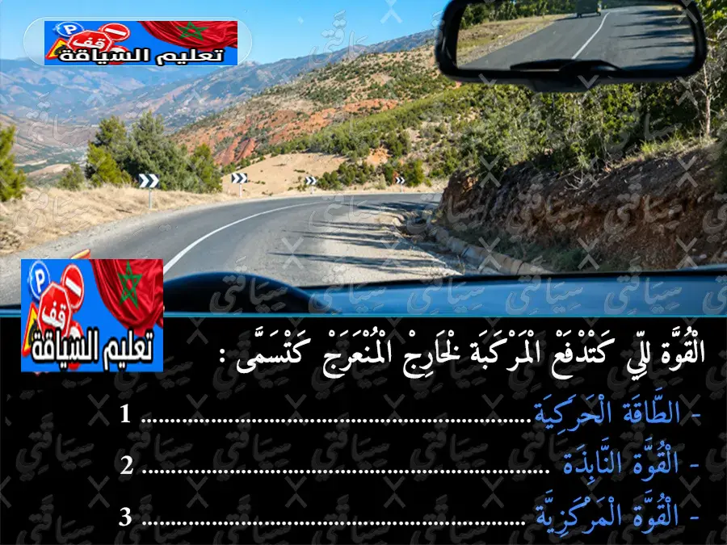
بيّن الجواب
الجواب الصحيح: 2
القوة اللي كتدفع المركبة لخارج المنعرج كتسمى القوة النابذة، وهي القوة اللي كتظهر ملي السيارة كتدخل فالمنعرج وكتحاول تخرجها لبرا ديال الدورة، خصوصا إلا كان السائق داخل بسرعة كبيرة. كلما زادت السرعة ولا كان المنعرج حاد، كتزاد هاد القوة وكيولي خطر فقدان التحكم أو الخروج من المسار أكبر. أما الطاقة الحركية فهي مرتبطة بحركة السيارة وسرعتها، والقوة المركزية كتكون موجهة نحو داخل المنعرج، ماشي للخارج. لذلك قبل أي منعرج خاصنا ننقصو من السرعة ونبقاو متحكمين فالمركبة. الجواب الصحيح هو القوة النابذة. الجواب الصحيح هو رقم 2.
السؤال 5
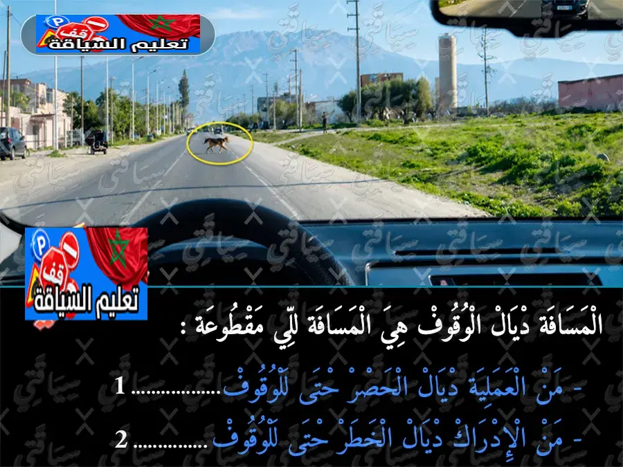
بيّن الجواب
الجواب الصحيح: 2
مسافة الوقوف هي المسافة الكاملة اللي كتقطعها المركبة من اللحظة اللي كيدرك فيها السائق الخطر حتى كتوقف نهائيا. هاد المسافة كتجمع بين جوج مراحل: الأولى هي مسافة رد الفعل، يعني منين كيشوف السائق الخطر حتى كيبدا يضغط على الفرامل، والثانية هي مسافة الحصر، يعني منين كيبدا الفرملة حتى كتوقف السيارة. أما المسافة من عملية الحصر حتى الوقوف فهي غير جزء من مسافة الوقوف وماشي هي كاملة. الجواب الصحيح هو من الإدراك ديال الخطر حتى الوقوف.
السؤال 6
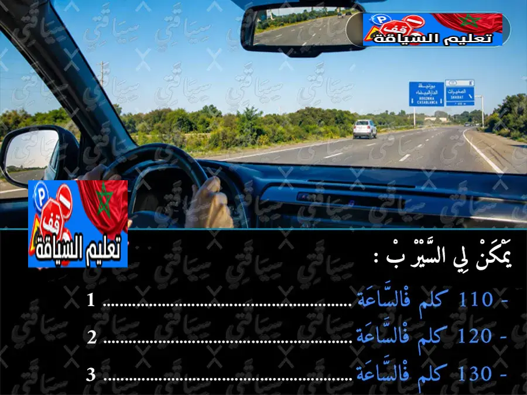
بيّن الجواب
الجواب الصحيح: 1 و 2
حنا كنتواجدو فـ الطريق السيار، وهاد الشي كيبان من اللوحات الزرقاء ديال الاتجاهات، والسرعة القصوى فهاد النوع ديال الطرقات هي 120 كلم فالساعة إلا ماكانت حتى علامة كاتفرض سرعة أقل. ولكن خاصنا نركزو مزيان فصيغة السؤال: هنا ماقالش لينا “شنو هي السرعة القصوى؟”، وإنما قال “يمكن لي السير بـ”، يعني أي سرعة ماكتفوتش 120 كلم فالساعة يمكن نسير بها قانونيا، بحال 110 كلم فالساعة أو 120 كلم فالساعة، أما 130 كلم فالساعة فهي ممنوعة لأنها كتفوت الحد الأقصى. أما إلا كان السائق باقي فالفترة الاختبارية، فالحد الأقصى ديالو هو 90 كلم فالساعة فقط. إذن الجواب الصحيح هو رقم 1 و 2: 110 و120 كلم فالساعة.
السؤال 7
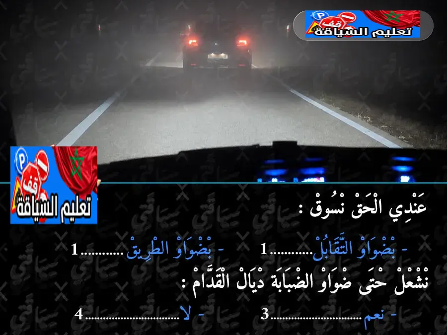
بيّن الجواب
الجواب الصحيح: 1 و 3
فهاد الحالة الرؤية ناقصة بسبب الضباب، وعندي سيارة قدامي، لذلك نقدر نسوق بأضواء التقابل لأنها مناسبة وماكاتعميش السائقين الآخرين. أما أضواء الطريق ممنوع نستعملها هنا، حيث ضوها قوي وكيقدر يعمي السائق اللي قدامي من خلال المرايات أو السائق اللي جاي من الاتجاه المعاكس. أضواء الطريق كنستعملوها غير خارج التجمعات السكنية وفاش الطريق تكون خالية وماكاين لا شي عربة قدامي لا شي عربة جاية من الجهة المقابلة. ويمكن فهاد الحالة نشعل حتى أضواء الضباب الأمامية بسبب الضباب. الجواب الصحيح هو 1 و 3.
السؤال 8
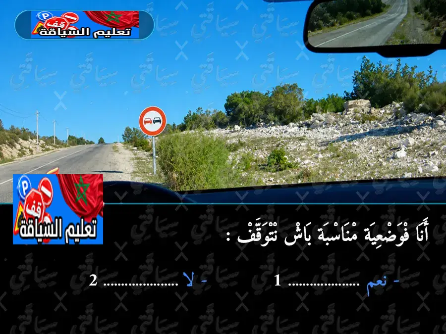
بيّن الجواب
الجواب الصحيح: 2
هاد الوضعية ماشي مناسبة باش نتوقف، حيث السيارة إلا وقفات فهاد المكان غادي تقدر تحجب العلامة الطرقية على السائقين اللي جايين من الخلف. والعلامة اللي باينة كتدل على ممنوع التجاوز، وهي علامة مهمة بزاف باش السائق يعرف أن هاد المقطع ماخاصوش يدير فيه التجاوز. إلا ما بقاتش باينة بسبب توقف السيارة، السائق اللي جاي من الخلف يمكن ماينتبهش للمنع ويدير التجاوز، وهاد الشي يقدر يسبب مخالفة أو حتى حادثة سير، خصوصا إلا كانت الرؤية ناقصة أو الطريق ماكتسمحش. لذلك خاصني ما نتوقفش فهاد المكان ونخلي العلامة باينة وواضحة للجميع. الجواب الصحيح هو رقم 2: لا.
السؤال 9
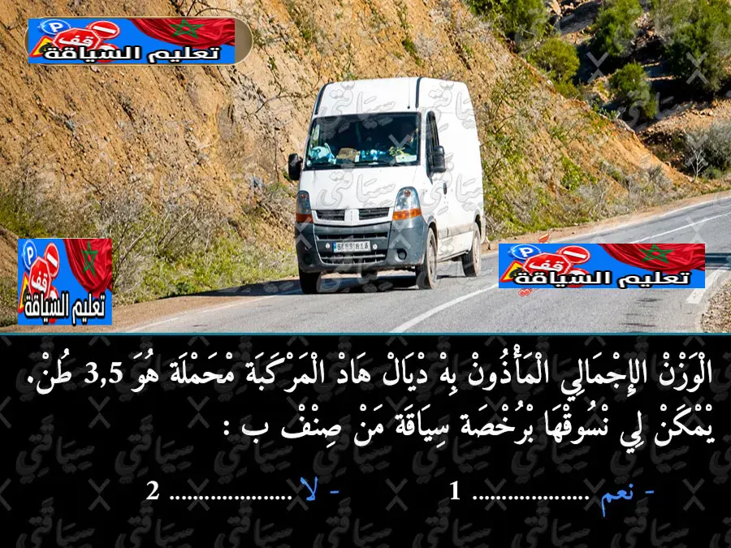
بيّن الجواب
الجواب الصحيح: 1
بما أن الوزن الإجمالي المأذون به للمركبة وهي محملة هو 3,5 طن، فيمكن نسوقها برخصة السياقة من صنف B، لأن هاد الصنف كيسمح بسياقة المركبات الخفيفة اللي الوزن ديالها محملة ماكيفوتش 3500 كيلوغرام. المقصود هنا ماشي غير وزن المركبة فارغة، ولكن الوزن الأقصى المسموح به مع الحمولة. أما إلا كان الوزن الإجمالي المأذون به كيتجاوز 3,5 طن، فهنا ماكتكفيش رخصة ب وكتحتاج رخصة من صنف آخر. الجواب الصحيح هو رقم 1: نعم.
السؤال 10
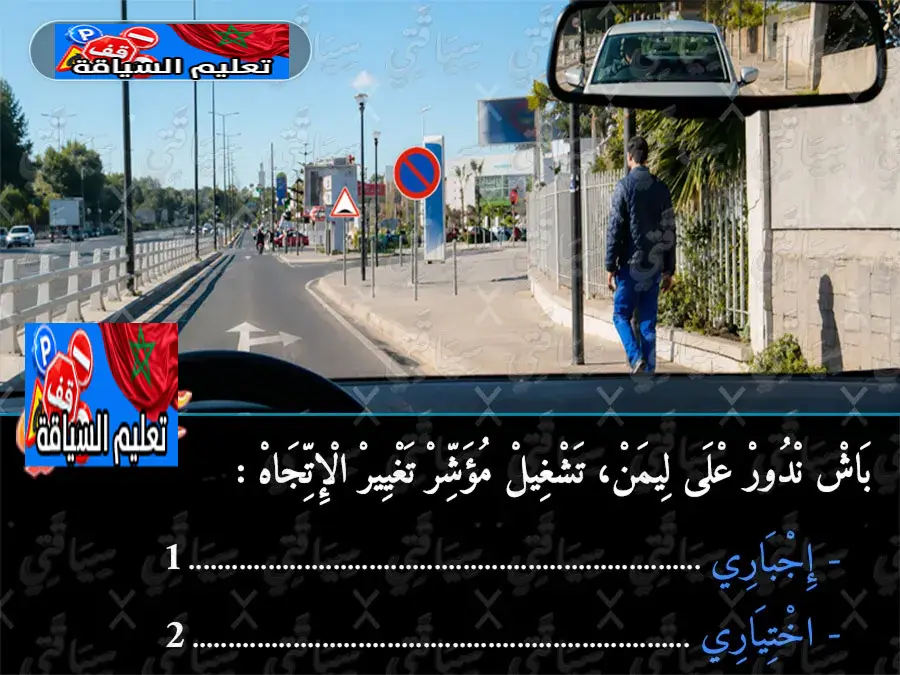
بيّن الجواب
الجواب الصحيح: 1
أي تغيير فالاتجاه، بحال الدوران على اليمين، خاصو ضروري يكون مسبوق بتشغيل مؤشر تغيير الاتجاه، باش نبين النية ديالي فين غادي نتجه، ونعطي الوقت للسائقين الآخرين والراجلين باش ينتابهو ومايتفاجؤوش بتغيير الإتجاه ديالي. لذلك تشغيل مؤشر تغيير الاتجاه دائما فهو إجباري. الجواب الصحيح هو رقم 1.
السؤال 11
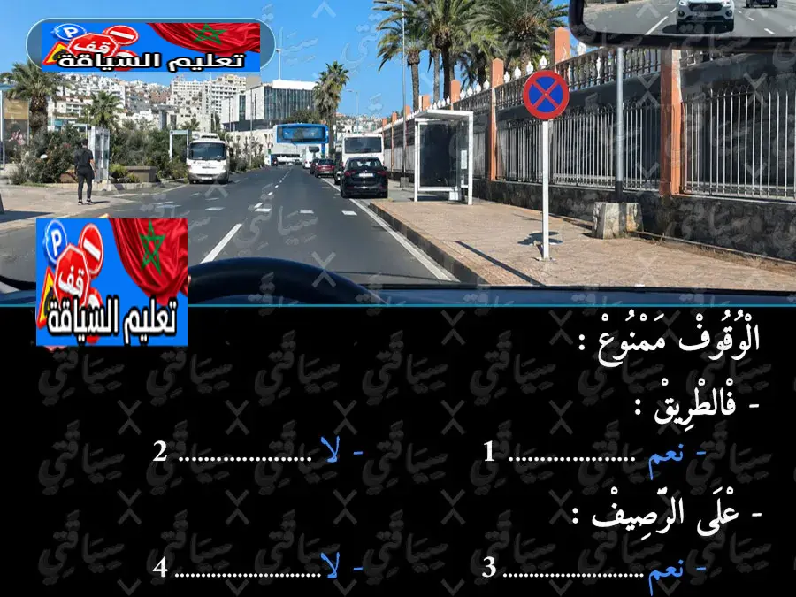
بيّن الجواب
الجواب الصحيح: 1 و 3
الوقوف ممنوع فهاد المكان سواء فالطريق أو على الرصيف. فالطريق ممنوع حيث كاينة علامة ممنوع الوقوف والتوقف، وزاد كاين خط متصل كيبين أن هاد البلاصة ماشي مخصصة باش نوقفو فيها. أما على الرصيف فحتى هو ممنوع، حيث الرصيف مخصص للراجلين وماشي لوقوف العربات، والوقوف فوقو كيعرقل مرورهم ويعرضهم للخطر. إذن الجواب الصحيح هو 1 و 3، ممنوع الوقوف على الطّريق وعلى الرّصيف.
السؤال 12
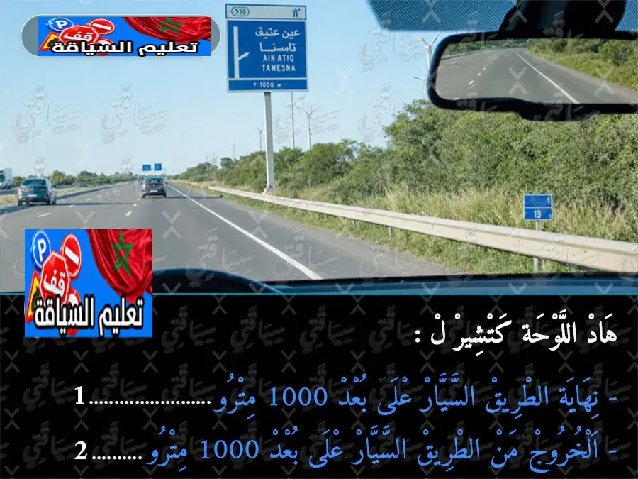
بيّن الجواب
الجواب الصحيح: 2
هاد اللوحة الزرقاء كتدل على خروج من الطريق السيار بعد 1000 متر فالاتجاه ديال عين عتيق وتامسنا، يعني اللي باغي يخرج خاصو يتهيأ ويمشي للمسلك المناسب بأمان. ماشي معناها نهاية الطريق السيار، لأن نهاية الطريق السيار كتكون بعلامة خاصة فيها رمز الطريق السيار وفوقو خط أحمر مائل كيبين أن الطريق السيار سالى. إذن هنا الطريق السيار باقي مستمر، غير كاينة خرجة جاية بعد 1000 متر، والجواب الصحيح هو رقم 2.
السؤال 13
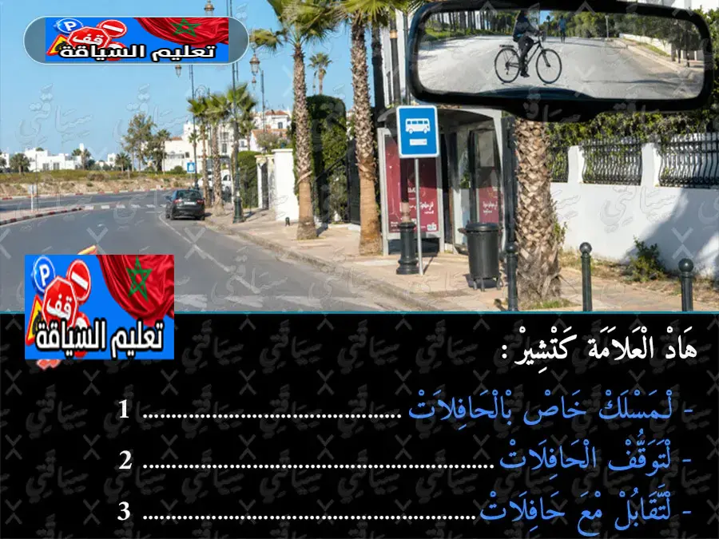
بيّن الجواب
الجواب الصحيح: 2
هاد العلامة الزرقاء اللي فيها رمز الحافلة كتدل على محطة توقف الحافلات، يعني بلاصة مخصصة باش الحافلات توقف وتهبط أو تطلع الركاب. ماشي معناها مسلك خاص بالحافلات، حيث المسلك الخاص كيكون غالبا بتشوير ديال مسار أو علامة كتبيّن طريق مخصص للحافلات، وماشي معناها تقابل مع حافلات. الجواب الصحيح هو رقم 2.
السؤال 14
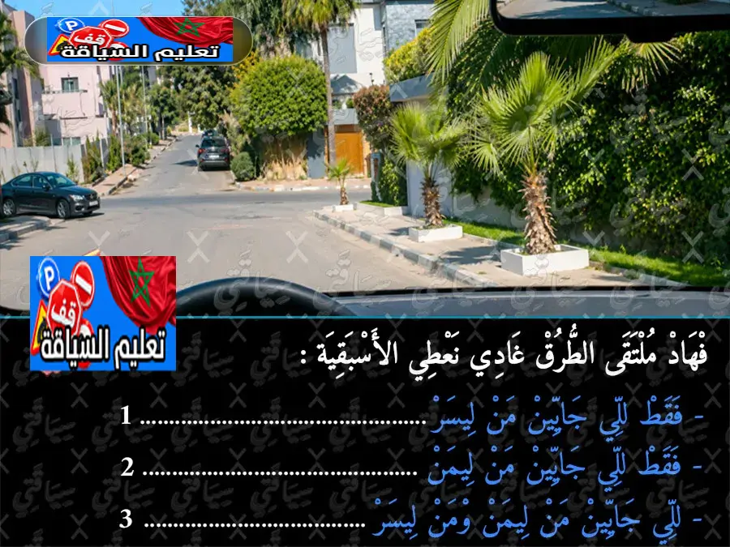
بيّن الجواب
الجواب الصحيح: 2
فملتقى طرق بلا تشوير، كنطبقو قاعدة الأسبقية ديال اليمين، يعني خاصني نعطي حق الأسبقية غير للعربات اللي جاية من جهة اليمين ديالي. أما اللي جاية من اليسار، ماعندهاش الأسبقية عليا فهاد الحالة. إذن خاصني ننتبه مزيان قبل ما ندوز، وإذا كان شي واحد جاي من اليمين نخليه يدوز هو الأول. الجواب الصحيح هو رقم 2، فقط اللي جايين من اليمين.
السؤال 15
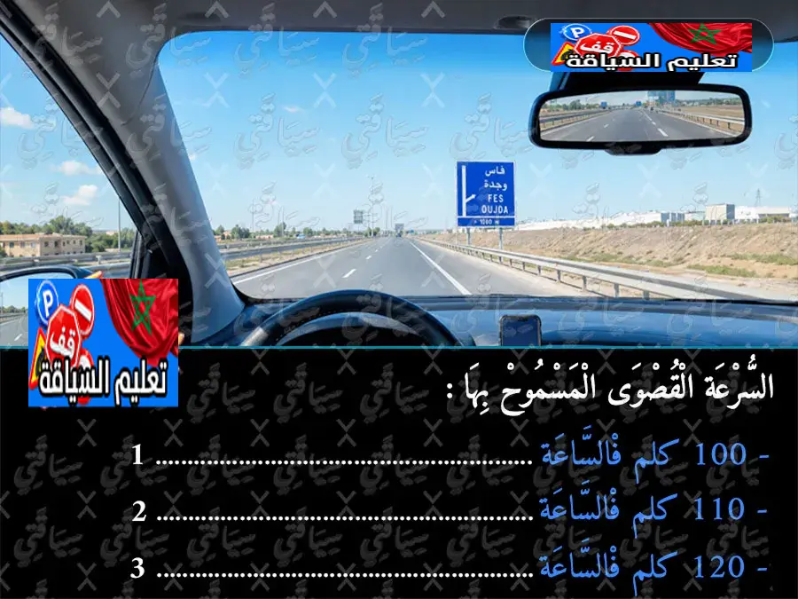
بيّن الجواب
الجواب الصحيح: 3
حنا كنتواجدو ف طريق سيار، وهاد الشي كيبان من اللوحات الزرقاء الكبيرة ديال الاتجاهات، بحال فاس ووجدة، ومن شكل الطريق. فحالة ماكايناش علامة كتحدد سرعة أقل، السرعة القصوى المسموح بها فالطريق السيار هي 120 كلم فالساعة. هنا السؤال كيسول على السرعة القصوى ماشي على السرعات اللي يمكن نسيرو بها، لذلك كنختارو أعلى سرعة مسموح بها قانونيا. الجواب الصحيح هو رقم 3: 120 كلم فالساعة.
السؤال 16
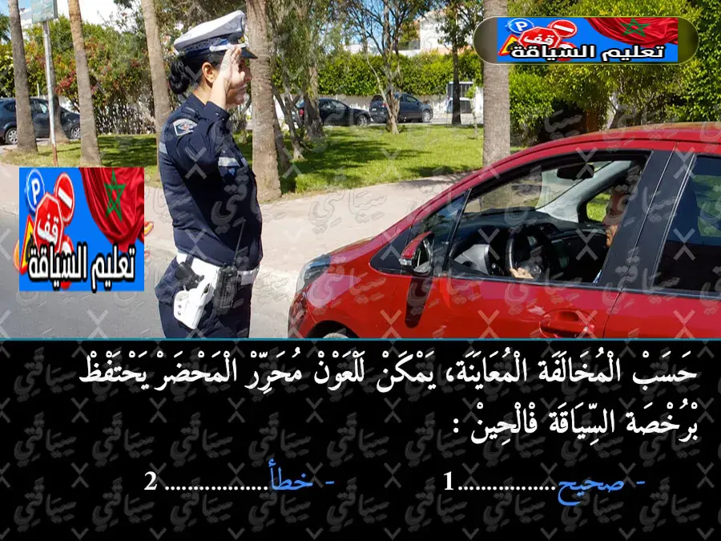
بيّن الجواب
الجواب الصحيح: 1
حالة المخالفة العادية، إلا ماخلصش السائق الغرامة فالحين، العون محرر المحضر يمكن ليه يحتفظ برخصة السياقة مؤقتاً، ولكن ماشي سحب نهائي؛ كيعطي للسائق وصل كيحل محل الرخصة وكيخليه يسوق لمدة مؤقتة حتى يسوي الوضعية ديالو. يعني الاحتفاظ بالرخصة كيكون كإجراء إداري مرتبط بعدم الأداء الفوري أو بالمسطرة القانونية، ماشي عقوبة نهائية مباشرة. الجواب الصحيح هو رقم 1: صحيح.
السؤال 17
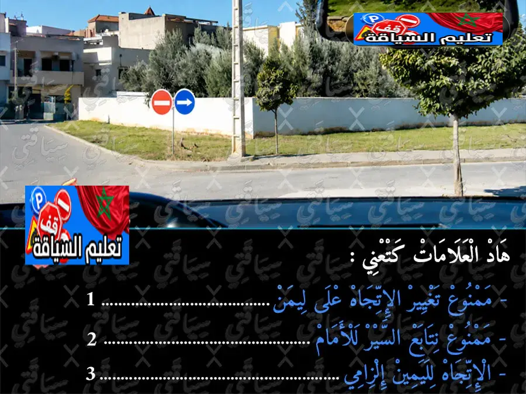
بيّن الجواب
الجواب الصحيح: 2 و 3
العلامة الطرقية الحمراء الخاصة بالمنع فهي تعني انه ممنوع نكمل السير للأمام، وفي نفس الوقت كاينة علامة زرقاء فيها سهم لليمين وكتعني الإجبار و أن الاتجاه لليمين إجباري نمشي فيه وماشي المنع. يعني السائق خاصو يتبع السهم ويدور لليمين، وماعندوش الحق يمشي لقدّام. الجواب الصحيح هو ممنوع متابعة السير للأمام و الاتجاه لليمين إجباري. الجزاب الصحيح هو رقم 2 و 3.
السؤال 18
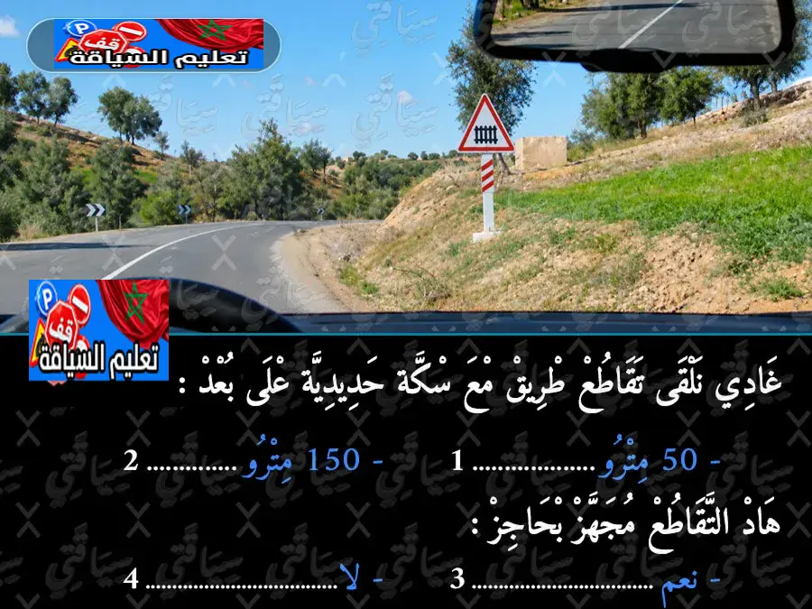
بيّن الجواب
الجواب الصحيح: 2 و 3
علامة الخطر كتدل على أننا غادي نقربو من تقاطع مع سكة حديدية مجهز بحاجز. أما المسافة كنحددوها من عمود العلامة الطّرقية اللي تحت العلامة، كانشوفو كاين خطوط حمراء مائلين: كل خط كيعني 50 متر، إلا كان خط واحد يعني 50 متر، جوج خطوط يعني 100 متر، وثلاثة خطوط بحال اللي فالصورة يعني 150 متر. إذن غادي نقطعو السكة الحديدية على بعد 150 متر، وهاد التقاطع مجهز بحاجز. الجواب الصحيح هو رقم 2 و3.
السؤال 19
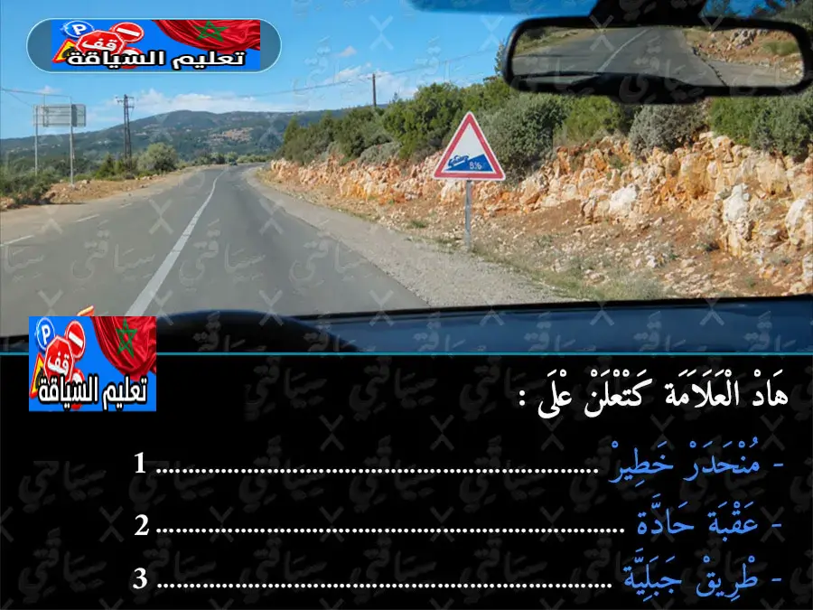
بيّن الجواب
الجواب الصحيح: 2
هاد العلامة المثلثة هي علامة خطر، وكتنبه السائق بلي قدامو عقبة حادة / طلعة قوية بنسبة 8%، حيت الرمز كيبين السيارة طالعة ماشي هابطة. يعني الطريق غادي تطلع وممكن السيارة تنقص السرعة، خصوصا إلا كانت محملة أو المحرك ضعيف، لذلك خاص السائق يختار السرعة المناسبة، يبقى مركز، ومايديرش تجاوز خطير حيث العربات قدامو ممكن يبطؤو بسبب الطلعة. هاد العلامة ماكاتعنيش منحدر خطير، لأن المنحدر كيكون الرمز ديالو هابط لتحت، وماكاتعنيش طريق جبلية كذلك. الجواب الصحيح هو رقم 2 عقبة حادة.
السؤال 20
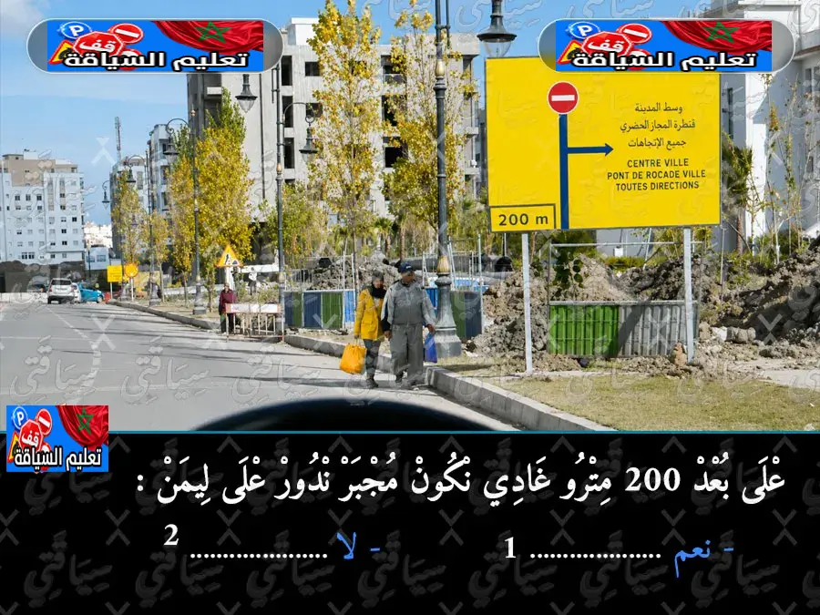
بيّن الجواب
الجواب الصحيح: 1
اللوحة الصفراء كتدل على تشوير مؤقت بسبب الأشغال، وكتبين لينا بلي على بعد 200 متر الطريق لقدّام غادي يكون ممنوع/مسدود، والسهم كيوجهنا لليمين نحو وسط المدينة وجميع الاتجاهات. يعني ملي نوصلو لهاد المكان، خاصنا نتبعو الاتجاه اللي كتعطينا اللوحة وندورو على اليمين، وماشي نكملو السير للأمام. الجواب الصحيح هو رقم 1: نعم.